Please do not share the following code and method to other students, as University regulations on non-invigilated examinations apply to this Group Project, just in case the plagiarism happenes. This group project is harder than the previous one, so it’s better to keep the method inside the group. As some groups might not even be able to do the initial task properly by their own.
This rmd file is backed up.
Instruction of how this method works was uploaded to Group Project upload page, by clicking “View site” of the Group Project 2a: http://somas-uploads.shef.ac.uk/mas115/
If you have any questions, please WhatsApp me in group or personally as soon as possible before the deadline.
Most of the example will not evaluate if knit, so if want to test them better to download the rmd file.
©180188598
Before we start
This rmd file contains a lot of functions, mainly two kinds: function(x,y) and function(x0,y0).
function(x,y) is a function relate to two variables x and y where x and y are the list of vertices of \(x\) and \(y\) coordinates respectively.
function(x0,y0) is a function relate to two variables x0 and y0 where x0 and y0 are the coordinate a point \((x_0,y_0)\) respectively.
Some functions might contain x,y,x0,y0 at the same time.
Please run the following code block first before you start.
Knit this page to html should work properly, but some errors might occured if knit to pdf. As this r markdown contains some html codes.
# Just to check the result by polyarea(x,y), not actually use in any function
library(pracma) from geometry_module import anti_rot, gradient, norm, perpdot, start_from_minx, start_from_miny, vector_rot90
# norm()
# start_from_miny()
# start_from_minx()
# anti_rot()
# gradient()
# vector_rot90()
# perpdot()
# anti_rot(x, y)
# gradient(x, y)
# norm(v)
# perpdot(x, y)
# start_from_minx(x, y)
# start_from_miny(x, y)
# vector_rot90(v)
Line equation by giving the gradient and a point \((x_0,y_0)\) is \(y - y_0 = m(x - x_0)\), or \(y = m(x - x_0) + y_0\). Then
from geometry_module import line_equ_y
# line_equ() in R -> line_equ_y() in Python
# Returns a function y = f(x) for edge i of the polygon.
x = [0, 3, 3, 1]
y = [0, 0, 2, 2]
f = line_equ_y(x, y, 0) # the bottom edge
print('y at x = 1.5 :', f(1.5))
x = [1, 3, 5, 9, 8, 2]
y = [2, 3, 3, -1, -3, 0]
from geometry_module import line_by_index
# linen_equ() in R -> line_by_index() in Python
# Same as above, but takes an edge number (1-based, wraps around).
f = line_by_index(x, y, 1)
print('y at x = 1.5 :', f(1.5))
from geometry_module import line_equ_x
# line_equy() in R -> line_equ_x() in Python
# Returns x = f(y) for edge i (the inverse of line_equ_y).
# Edge 1 is the slanted one; a horizontal edge would divide by zero.
x = [0, 3, 3, 1]
y = [0, 0, 2, 2]
g = line_equ_x(x, y, 1)
print('x at y = 1 :', g(1.0))
from geometry_module import line_equ_x
# linen_equy() in R has no direct counterpart: use line_equ_x()
# with an explicit edge index instead.
x = [0, 3, 3, 1]
y = [0, 0, 2, 2]
g = line_equ_x(x, y, 1)
print('x at y = 1 :', g(1.0))
Please also run this block before you continue, as we need this function.
To be honest, type_of_polygon is a pretty low efficient function, but enough to identify the type of low amount of polygons.
from geometry_module import type_of_polygon
# type_of_polygon()
# type_of_polygon(x, y) -> 'Convex' / 'Non-convex'
from geometry_module import classify_polygon
# type_of_polygon_v2() in R -> classify_polygon()
# classify_polygon(x, y) -> 'Convex' / 'Concave' / 'Self-intersecting'
from geometry_module import classify_polygon
# type_of_polygon_v3() in R -> classify_polygon()
# classify_polygon(x, y) -> 'Convex' / 'Concave' / 'Self-intersecting'
Also, if three or more vertices in one or more lines, we can get rid the the vertices in-between.
from geometry_module import start_from_minx
# start_from_minx_v2() in R -> start_from_minx()
# start_from_minx(x, y)
This function might be useful later.
Definition 1.1 (Convex Vertex) For a vertex of the simple polygon, if the angle on the vertices is less or equal to \(\frac{\pi}{2}\), then it is a convex vertex.
Definition 1.2 (Concave Vertex) For a vertex of the simple polygon, if the angle on the vertices is bigger than \(\frac{\pi}{2}\), then it is a convex vertex.
Then we can classify then:
from geometry_module import classify_vertices
# ang_classify() in R -> classify_vertices()
# classify_vertices(x, y)
# The R version splits a concave polygon into convex pieces, then
# samples each piece separately. The Python version does not need this:
# the winding-number test already handles concave and self-intersecting
# polygons directly, so the whole shape can be sampled in one pass.
#
# sampled = area_mc_method(x, y, k=5000, method='wind')
# The R version splits a concave polygon into convex pieces, then
# samples each piece separately. The Python version does not need this:
# the winding-number test already handles concave and self-intersecting
# polygons directly, so the whole shape can be sampled in one pass.
#
# sampled = area_mc_method(x, y, k=5000, method='wind')
# The R version splits a concave polygon into convex pieces, then
# samples each piece separately. The Python version does not need this:
# the winding-number test already handles concave and self-intersecting
# polygons directly, so the whole shape can be sampled in one pass.
#
# sampled = area_mc_method(x, y, k=5000, method='wind')
# The R version splits a concave polygon into convex pieces, then
# samples each piece separately. The Python version does not need this:
# the winding-number test already handles concave and self-intersecting
# polygons directly, so the whole shape can be sampled in one pass.
#
# sampled = area_mc_method(x, y, k=5000, method='wind')
# The R version splits a concave polygon into convex pieces, then
# samples each piece separately. The Python version does not need this:
# the winding-number test already handles concave and self-intersecting
# polygons directly, so the whole shape can be sampled in one pass.
#
# sampled = area_mc_method(x, y, k=5000, method='wind')
There are some examples:
from geometry_module import area_mc_method
x = [1, 3, 4, 7]
y = [1, 4, 1, 5]
print(area_mc_method(x, y, 5000, 'wind'))
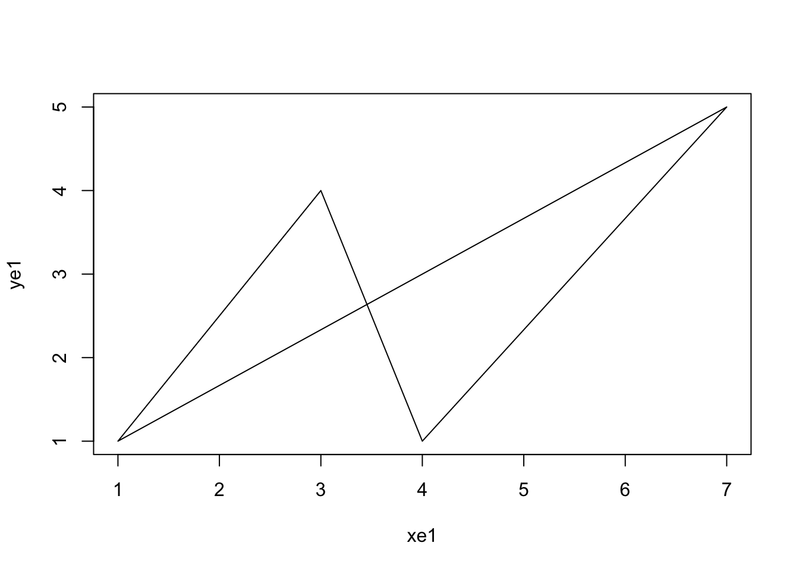
type_of_polygon(xe1,ye1)## [1] "Non-convex"type_of_polygon_v2(xe1,ye1)## [1] "Self-intersecting"from geometry_module import area_mc_method
x = [4, 3, 2, 0, 1, 3]
y = [6, 7, 6, 0, -2, 1]
print(area_mc_method(x, y, 5000, 'wind'))
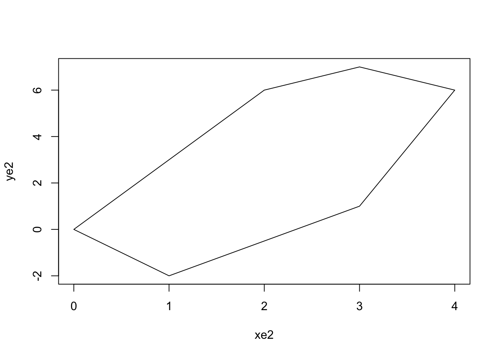
type_of_polygon(xe2,ye2)## [1] "Convex"type_of_polygon_v2(xe2,ye2)## [1] "Convex"from geometry_module import area_mc_method
xe3 = [1, 3, 4, 7, 6, 4]
ye3 = [1, 4, 8, 5, 3, 5]
print(area_mc_method(xe3, ye3, 5000, 'ray'))
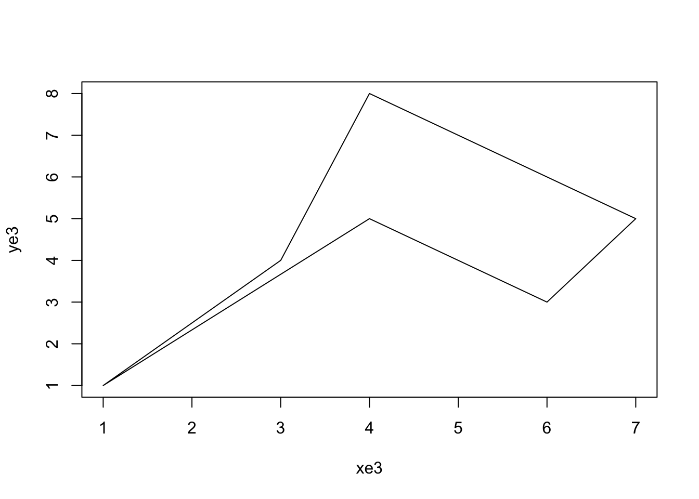
type_of_polygon(xe3,ye3)## [1] "Non-convex"type_of_polygon_v2(xe3,ye3)## [1] "Concave"from geometry_module import area_mc_method
x = [1, 3, 4, 7, 6, 3, 2]
y = [8, 4, 8, 5, -1, 5, 1]
print(area_mc_method(x, y, 5000, 'wind'))
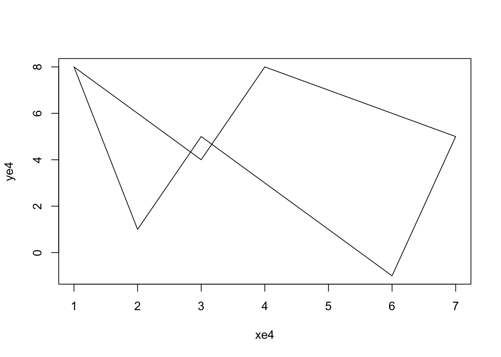
type_of_polygon(xe4,ye4)## [1] "Non-convex"type_of_polygon_v2(xe4,ye4)## [1] "Self-intersecting"
from geometry_module import generate_k_random_point
# generate_k_random_point()
# generate_k_random_point(x, y, k)
For any polygons, we can classify the vertices into two kinds: Above and below the polygon. But there is also a kind of vertex that lies at the leftmost or rightmost of the polygon.
Let’s define them first.
Definition 2.1 (Upper Vertex) In a convex polygon, starting from the vertex with minimum \(x\)-coordinate in clockwise direction and ending at the vertex with maximum \(x\)-coordinate, the vertices in-between are upper vertices.
Definition 2.2 (Lower Vertex) In a convex polygon, starting from the vertex with minimum \(x\)-coordinate in anticlockwise direction and ending at the vertex with maximum \(x\)-coordinate, the vertices in-between are lower vertices.
Definition 2.3 (Bounded Vertex) In a convex polygon, if a vertex has the minimum or maximum \(x\) value among all vertices, then it is a bounded vertex.
Given an ordered set of vertices of polygon, we can use the following code to classify them.
from geometry_module import classify_vertices
# classify() in R -> classify_vertices()
# classify_vertices(x, y)
# The R version splits a concave polygon into convex pieces, then
# samples each piece separately. The Python version does not need this:
# the winding-number test already handles concave and self-intersecting
# polygons directly, so the whole shape can be sampled in one pass.
#
# sampled = area_mc_method(x, y, k=5000, method='wind')
from geometry_module import lower_bound, upper_bound
# lower_bound()
# upper_bound()
# lower_bound(x, y, px)
# upper_bound(x, y, px)
from geometry_module import point_inside
# point_inside()
# point_inside(x, y, px, py) -> 'inside' / 'outside' / 'on boundary'
Area of the rectangle is area_of_rectangle <- (max(x) - min(x))*(max(y) - min(y)). If there are p points in the polygon and n points in total, then the area of polygon can be approximately by p/n*area_of_rectangle.
from geometry_module import area_mc_method
# area_mc_method()
# area_mc_method(x, y, k, method)
from geometry_module import area_mc_method
# area_mc_method_v2() in R -> area_mc_method()
# area_mc_method(x, y, k, method)
from geometry_module import area_mc_method
# area_mc_method_v2n() in R -> area_mc_method()
# area_mc_method(x, y, k, method)
from geometry_module import area_mc_method
x = [1, 4, 5, 2, 1, 0]
y = [0, 1, 4, 5, 4, 1]
print(area_mc_method(x, y, 5000, 'wind'))
## [1] "Convex Polygon"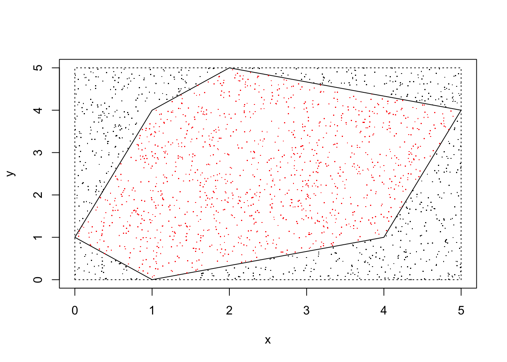
## [1] 16.0625polyarea(x1,y1)## [1] 16
area_mc_method(xe1,ye1) # Recall the previous example## [1] "Input values are not vaild. Error: Non-convex Polygon"area_mc_method_v2(xe1,ye1)## [1] "Input values are not vaild. Error: Self-intersecting Polygon"
area_mc_method(xe2,ye2)## [1] "Convex Polygon"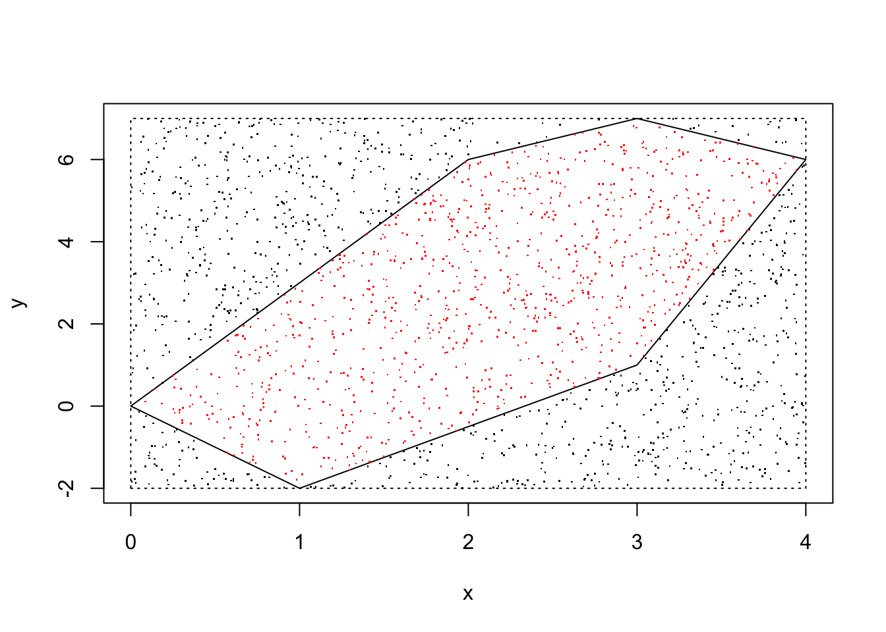
## [1] 18.324polyarea(xe2,ye2)## [1] 17.5
from geometry_module import area_mc_method
x = [1, 3, 4, 7, 6, 4]
y = [1, 4, 8, 5, 3, 5]
print(area_mc_method(x, y, 5000, 'wind'))
## [1] "Concave Polygon"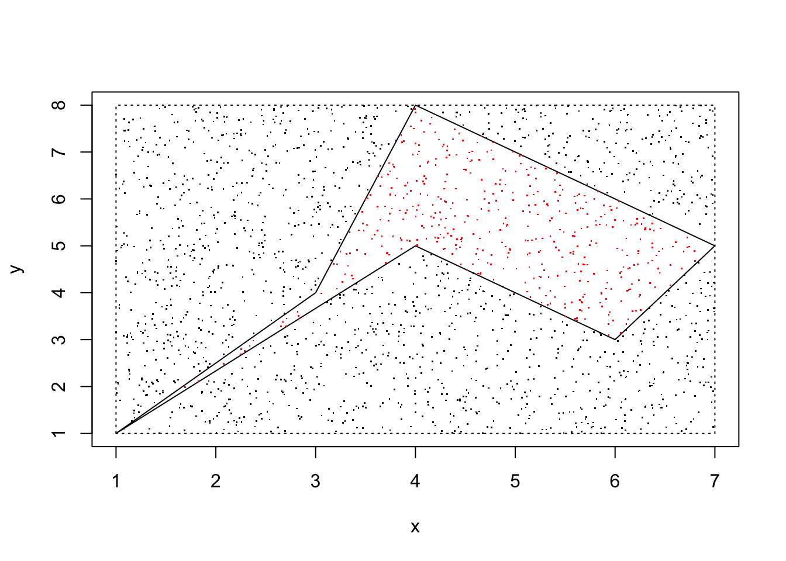
## [1] 9.618area_mc_method_v2(xe3,ye3)## [1] "Concave Polygon"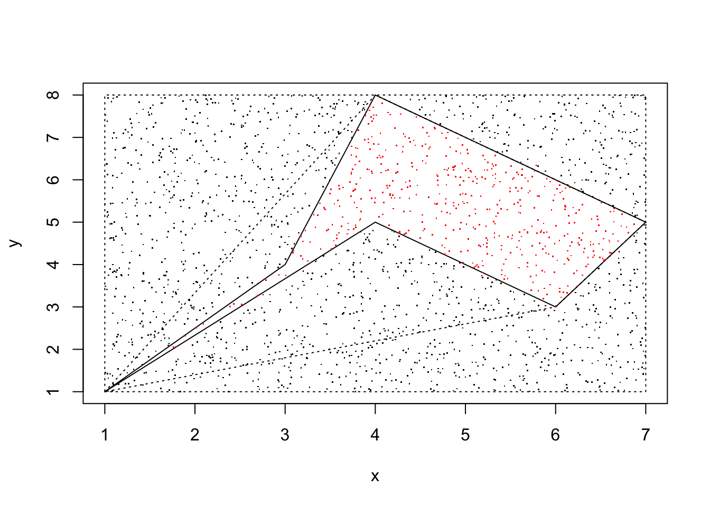
## [1] 10.311polyarea(xe3,ye3)## [1] -9.5
from geometry_module import area_mc_method
# A self-intersecting polygon.
xe5 = [1, 3, 5, 4, 5, 3, 2]
ye5 = [1, 6, 4, 3, 2, 3, 3]
print(area_mc_method(xe5, ye5, 5000, 'wind'))
## [1] "Concave Polygon"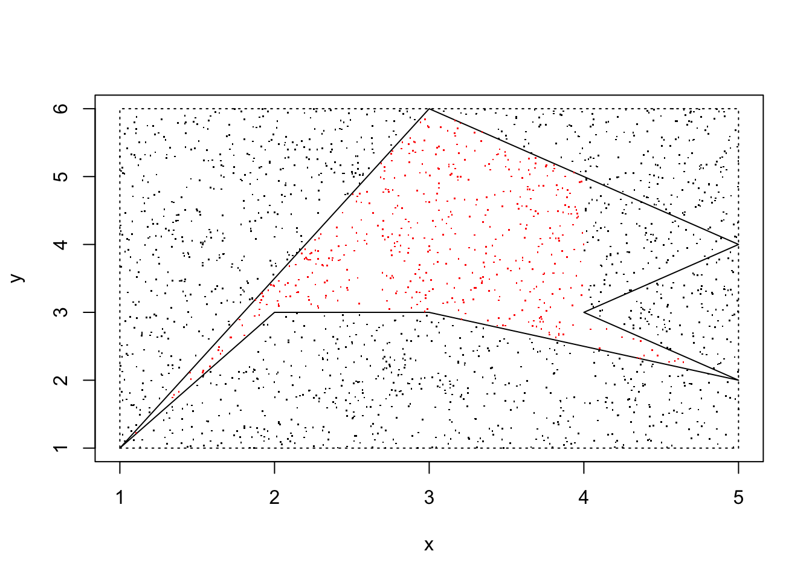
## [1] 5.01area_mc_method_v2(xe5,ye5) # Better approximation## [1] "Concave Polygon"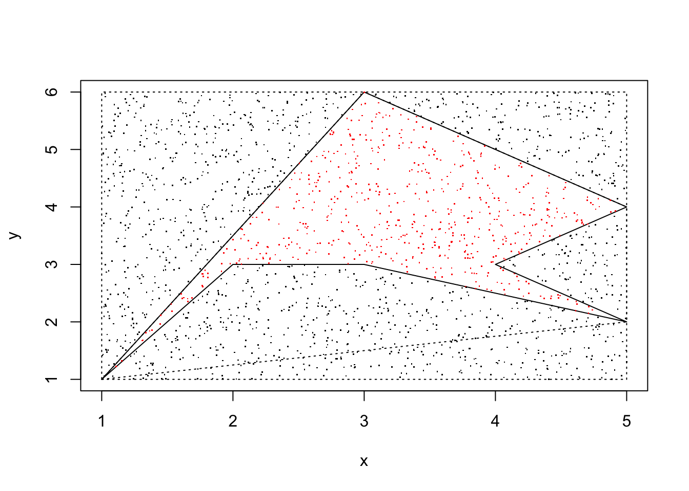
## [1] 6.29polyarea(xe5,ye5)## [1] -6
from geometry_module import area_mc_method
x = [0, 1, 5, 15, 11, 20, 8]
y = [4, 1, 2, -4, 0, 3, 1]
print(area_mc_method(x, y, 5000, 'wind'))
## [1] "Concave Polygon"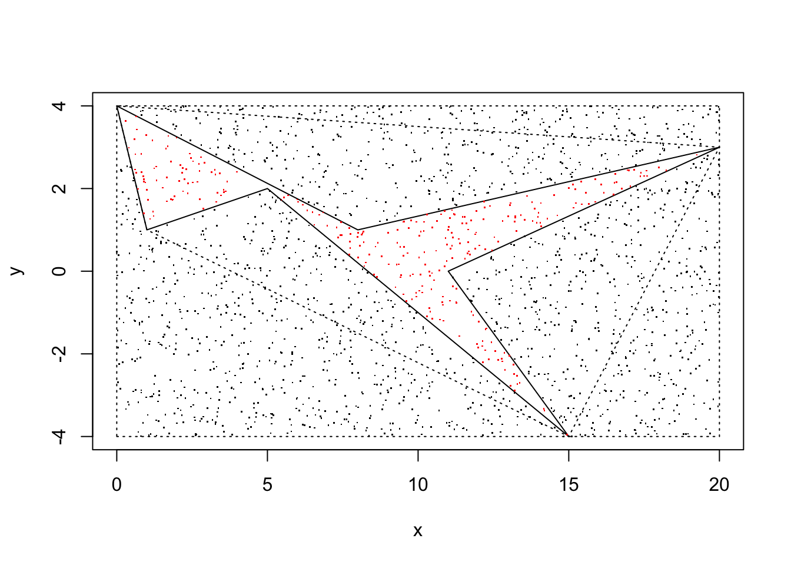
## [1] 23.68polyarea(xe6,ye6)## [1] 24
from geometry_module import area_mc_method
xe7 = [5, 4, 7, 6, 5, 6, 6, 3, 4, 5, 3, 2, 3, 1, 3, 2]
ye7 = [4, 2, 3, -1, 1, 0, 2, 1, 1, -1, 0, 1, 2, 1, 3, 4]
print(area_mc_method(xe7, ye7, 5000, 'wind'))
## [1] "Concave Polygon"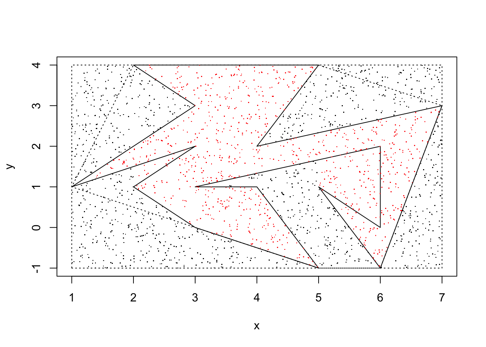
## [1] 13.59area_mc_method_v2n(xe7,ye7)## [1] "Concave Polygon"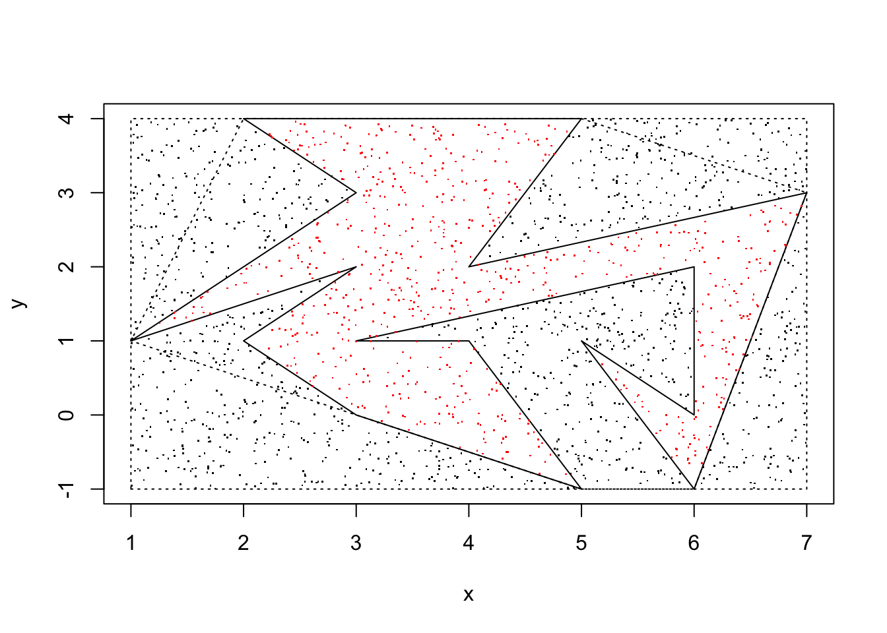
## [1] 11.235polyarea(xe7,ye7)## [1] -12Please check the website to find the explanation.
from geometry_module import point_inside
# ray_pass() in R -> point_inside()
# point_inside(x, y, px, py) -> 'inside' / 'outside' / 'on boundary'
from math import atan2, pi
# angle() in R built the polar angle by hand with atan and four
# quadrant branches. Python has atan2, which does it in one call:
def angle(px, py, rx, ry):
return atan2(py - ry, px - rx) % (2 * pi)
from geometry_module import winding_number
# winding_number()
# winding_number(x, y, px, py)
from geometry_module import point_inside_v2
# point_inside_v2()
# point_inside_v2(x, y, px, py, method)
from geometry_module import area_mc_method
# area_mc_method_v3() in R -> area_mc_method()
# area_mc_method(x, y, k, method)
area_mc_method_v3(xe1,ye1,method = "ray")## [1] "Self-intersecting Polygon"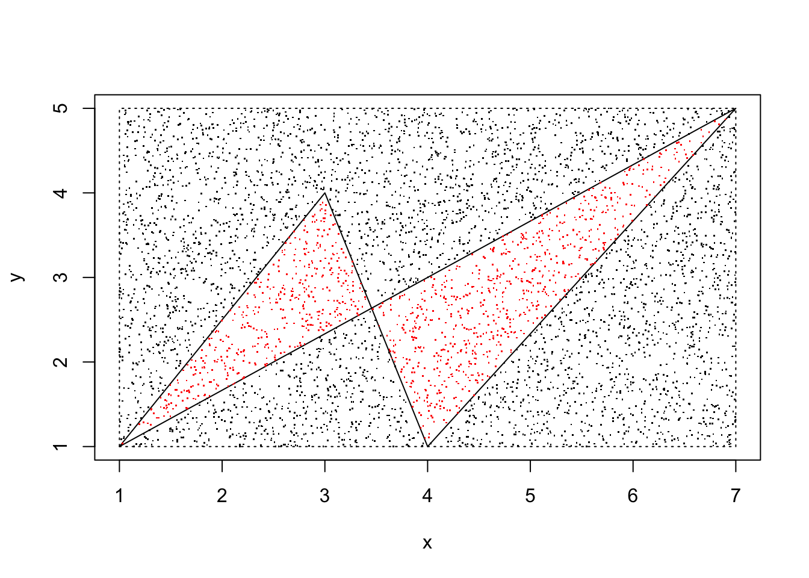
## [1] 5.7648area_mc_method_v3(xe4,ye4,method = "ray")## [1] "Self-intersecting Polygon"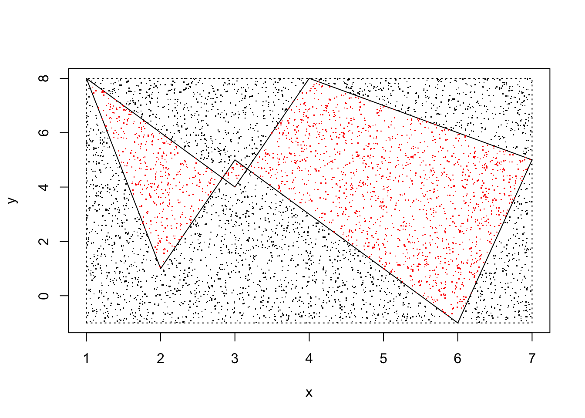
## [1] 21.87area_mc_method_v3(xe1,ye1,method = "wind")## [1] "Self-intersecting Polygon"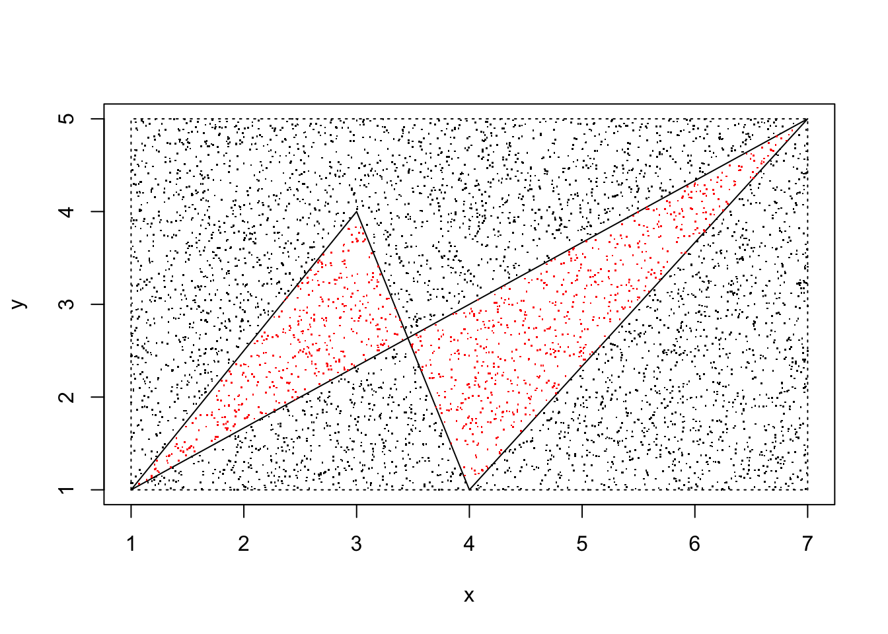
## [1] 5.3664area_mc_method_v3(xe4,ye4,method = "wind")## [1] "Self-intersecting Polygon"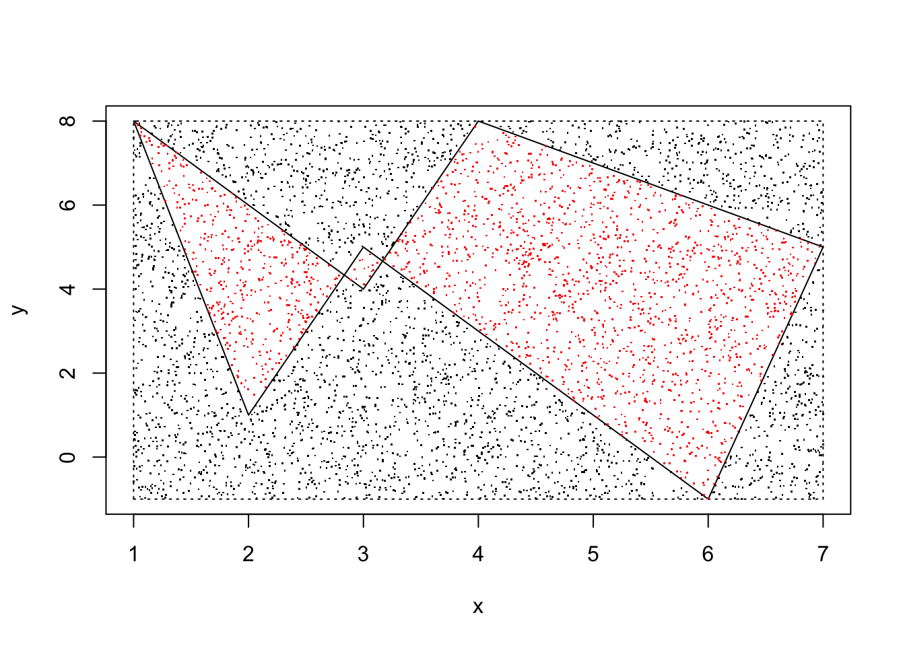
## [1] 22.3992# A nested spiral: several squares inside each other.
from geometry_module import area_mc_method
# A nested spiral: several squares inside each other.
x = [6, -2, -2, 6, 6, 0, 0, 4, 4, 2, 2, 3, 3, 1, 1, 5, 5, -1, -1, 6]
y = [0, 0, 9, 9, 2, 2, 7, 7, 4, 4, 5, 5, 6, 6, 3, 3, 8, 8, 1, 1]
print(area_mc_method(x, y, 5000, 'wind'))
## [1] "Concave Polygon"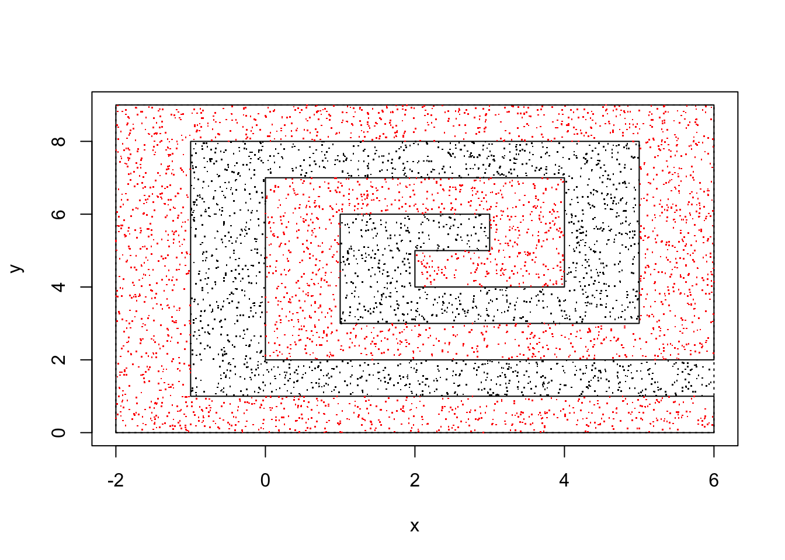
## [1] 43.1856area_mc_method_v3(xff,yff,method = "wind")## [1] "Concave Polygon"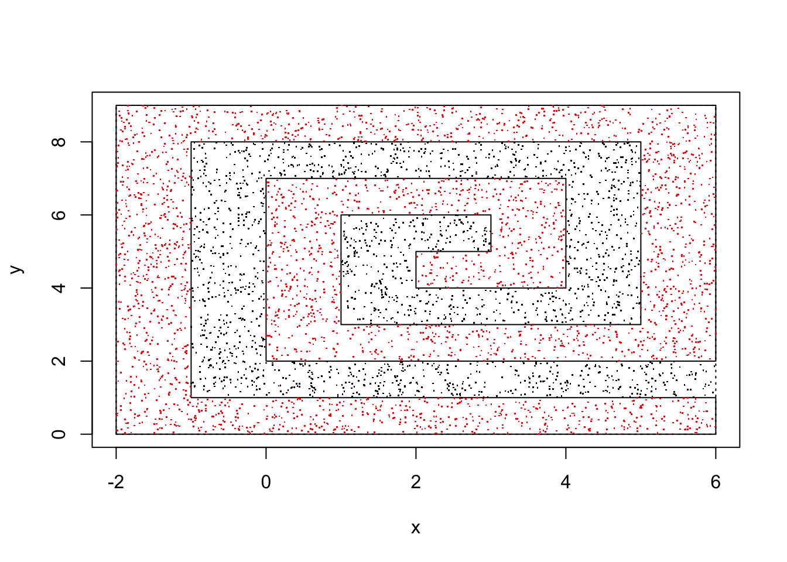
## [1] 44.0784# The same idea, extended downward.
from geometry_module import area_mc_method
# The same idea, extended downward.
x = [6, -2, -2, 6, 6, 0, 0, 4, 4, 2, 2, 3, 3, 1, 1, 5, 5, -1, -1, 7, 7, -1, -1, 5, 5, 1, 1, 3, 3, 2, 2, 4, 4, 0, 0, 6, 6, -2, -2, 6]
y = [0, 0, 9, 9, 2, 2, 7, 7, 4, 4, 5, 5, 6, 6, 3, 3, 8, 8, 1, 1, -2, -2, -9, -9, -4, -4, -7, -7, -6, -6, -5, -5, -8, -8, -3, -3, -10, -10, -1, -1]
print(area_mc_method(x, y, 5000, 'wind'))
## [1] "Concave Polygon"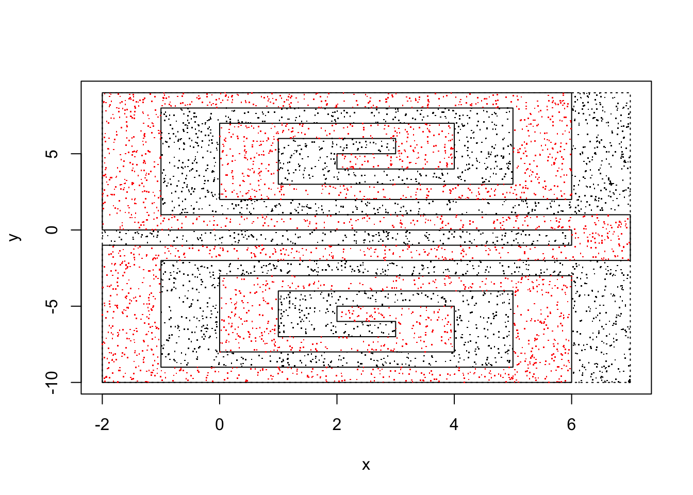
## [1] 91.4508area_mc_method_v3(xfff,yfff,method = "wind")## [1] "Concave Polygon"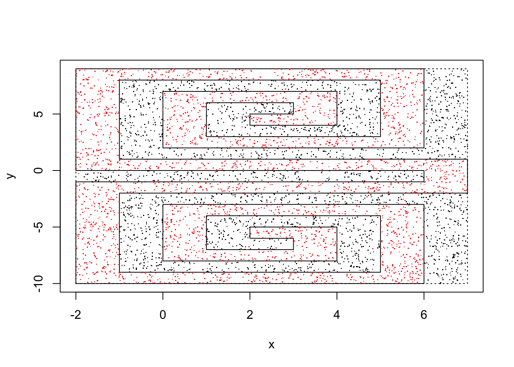
## [1] 92.682from geometry_module import area_mc_method
xe0 = [4, 6, 0, 8, 2]
ye0 = [3, -4, 0, 0, -4]
print(area_mc_method(xe0, ye0, 5000, 'ray'))
## [1] "Self-intersecting Polygon"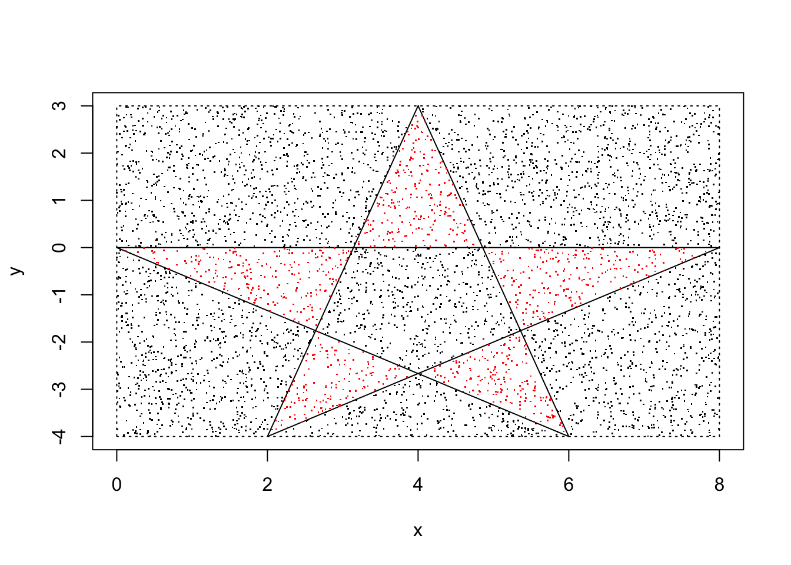
## [1] 11.4128area_mc_method_v3(xe0,ye0,method = "wind")## [1] "Self-intersecting Polygon"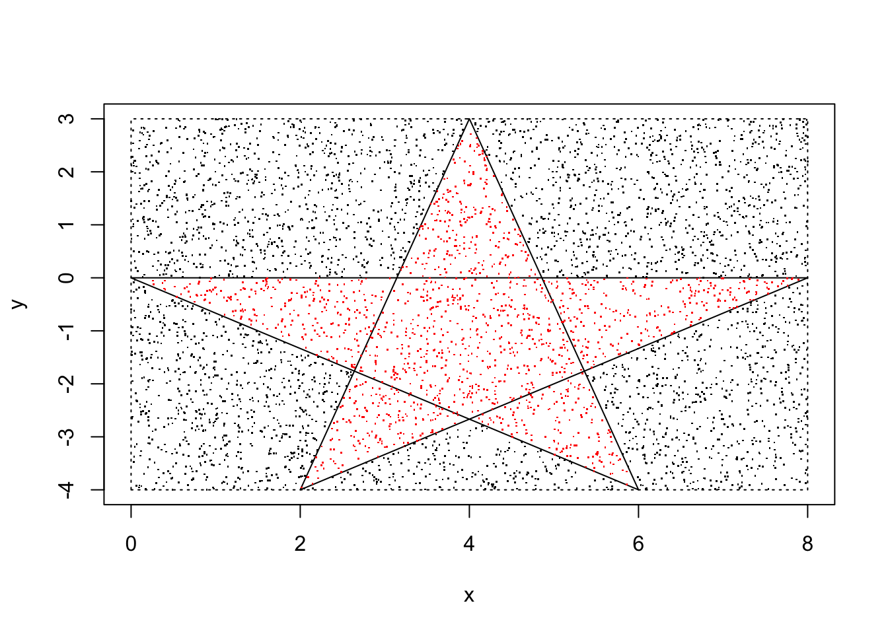
## [1] 17.304from geometry_module import area_mc_method
x = [2, 3, 1, 5, 3, 2, 0, 2, 3, 4, 5, 2, 1, 2, 4, 5, 6, 3]
y = [5, 4, 2, 3, 4, 1, 2, 4, 5, 6, 3, 1, 2, 4, 5, 6, 2, 1]
print(area_mc_method(x, y, 5000, 'wind'))
## [1] "Self-intersecting Polygon"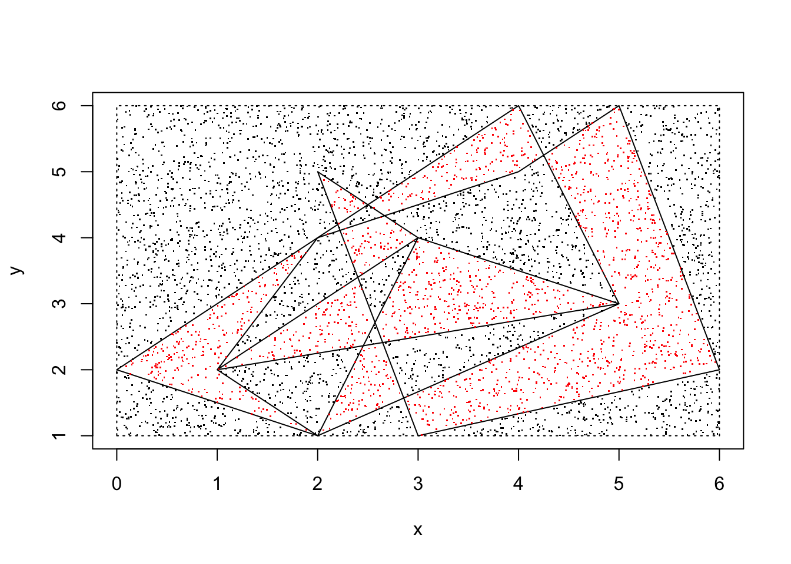
## [1] 11.634area_mc_method_v3(x,y,method = "wind")## [1] "Self-intersecting Polygon"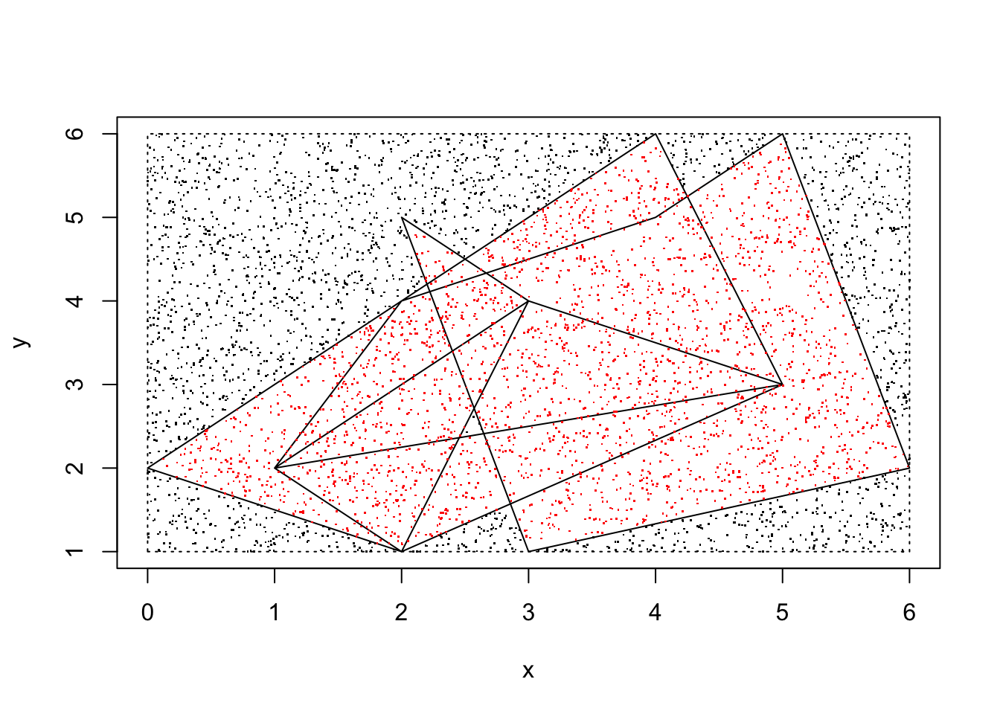
## [1] 16.638from geometry_module import simpsons_rule
# simpsons_rule()
# simpsons_rule(f, a, b, n)
from geometry_module import area_mc_method
# area_mc_method_v4() in R -> area_mc_method()
# area_mc_method(x, y, k, method)
from geometry_module import monte_carlo_integral
# monte_carlo_integral()
# monte_carlo_integral(f, a, b, n, method='original' / 'antithetic')
Pick’s theorem is a very good method for calculating the area of a polygon with integer co-ordinates.
from geometry_module import picks_theorem
# picks_theorem()
# picks_theorem(interior, boundary)
from geometry_module import area_mc_method
x = [1, 3, 5, 9, 8, 2]
y = [2, 3, 3, -1, -3, 0]
print(area_mc_method(x, y, 5000, 'wind'))
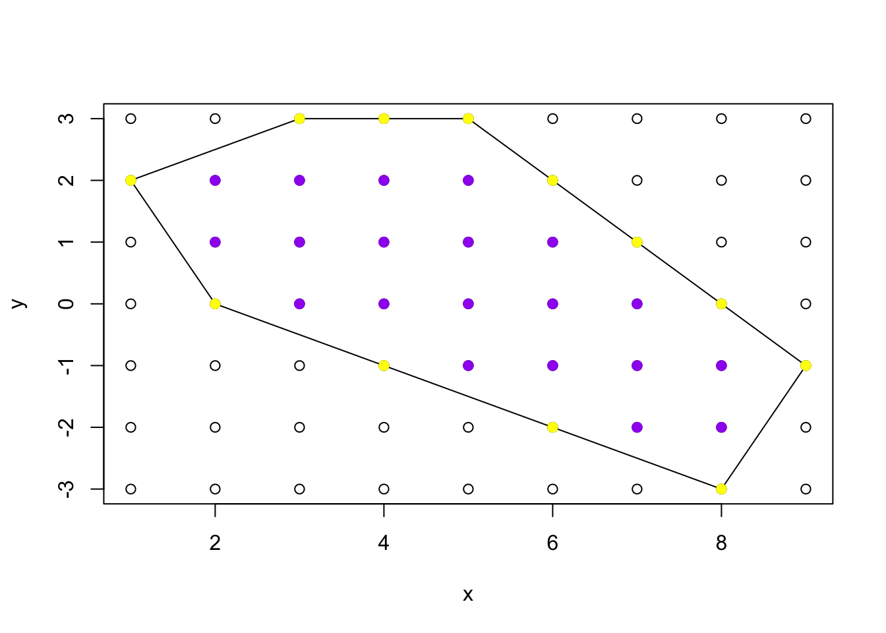
## [1] 25from geometry_module import area_mc_method
xe7 = [5, 4, 7, 6, 5, 6, 6, 3, 4, 5, 3, 2, 3, 1, 3, 2]
ye7 = [4, 2, 3, -1, 1, 0, 2, 1, 1, -1, 0, 1, 2, 1, 3, 4]
print(area_mc_method(xe7, ye7, 5000, 'wind'))
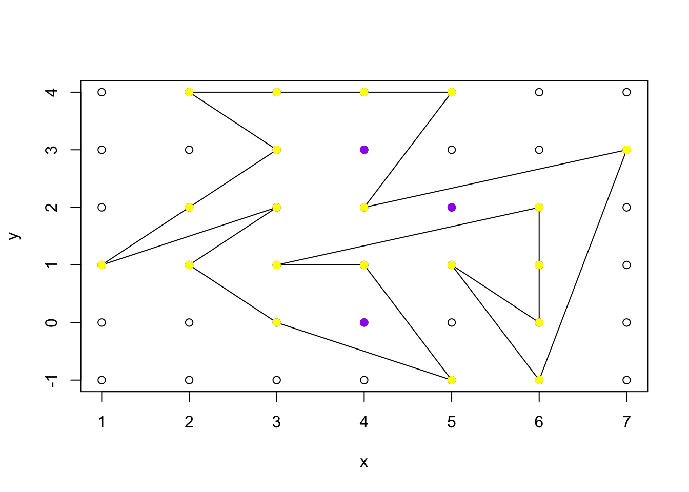
## [1] 12picks_theorem(xff,yff)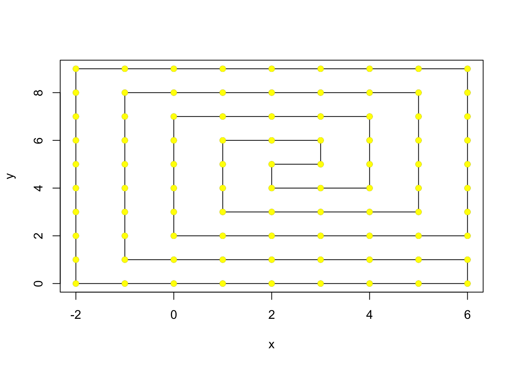
## [1] 44
from geometry_module import generate_poly
# generate_poly()
# generate_poly(n, convex=True)
from geometry_module import generate_poly, classify_polygon
x, y = generate_poly(7, convex=True)
print('type:', classify_polygon(x, y))
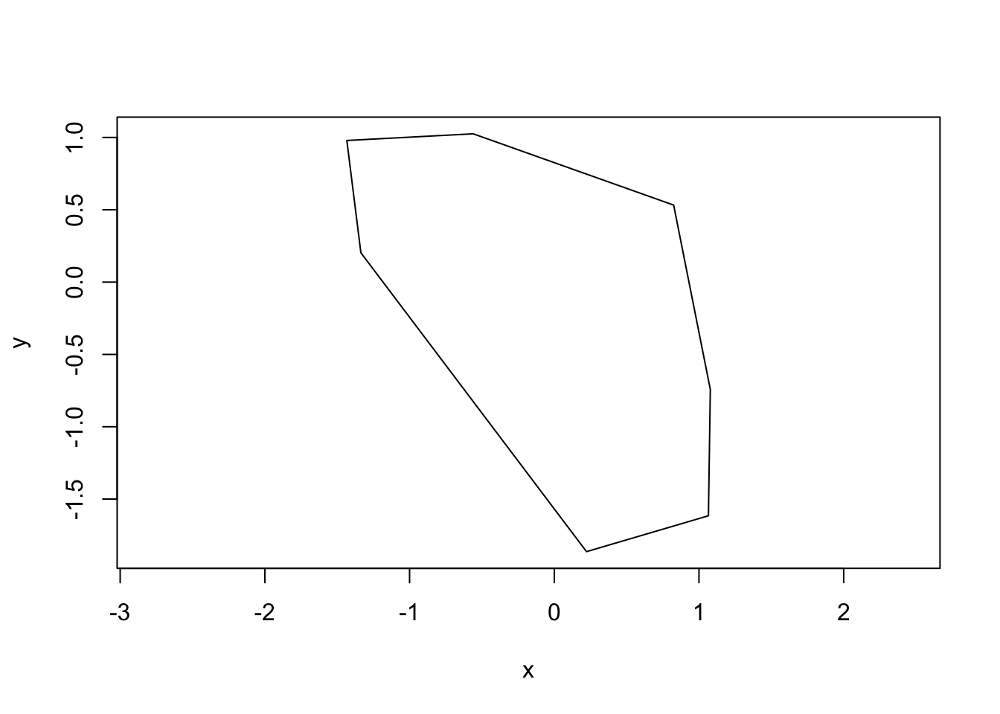
## $x
## [1] -1.4336985 -0.5596882 0.8249295 1.0783612 1.0652753 0.2228578
## [7] -1.3364757
##
## $y
## [1] 0.9790483 1.0251729 0.5323985 -0.7426807 -1.6154611 -1.8633887
## [7] 0.2025094
from geometry_module import generate_poly
# generate_poly_v2() in R -> generate_poly()
# generate_poly(n, convex=True)
import random
from geometry_module import generate_poly, area_mc_method, classify_polygon
# A random 20-vertex polygon. Large n can produce a self-intersecting shape.
random.seed(2019)
x, y = generate_poly(20, convex=False)
print('type:', classify_polygon(x, y))
print('area:', area_mc_method(x, y, 5000, 'wind')[0])
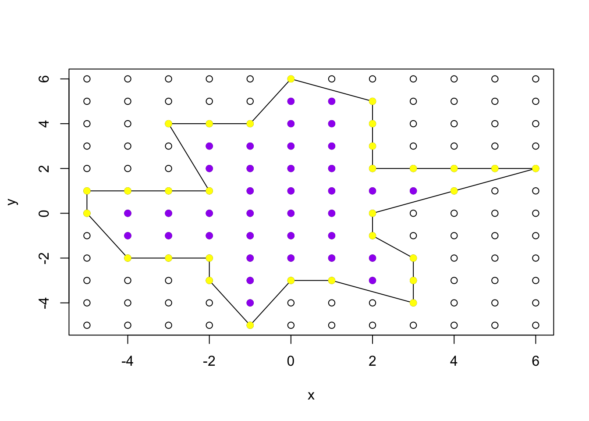
## [1] 50import random
from geometry_module import generate_poly, area_mc_method, classify_polygon
# A random 20-vertex polygon. Large n can produce a self-intersecting shape.
random.seed(2019)
x, y = generate_poly(20, convex=False)
print('type:', classify_polygon(x, y))
print('area:', area_mc_method(x, y, 5000, 'wind')[0])
## [1] "Concave Polygon"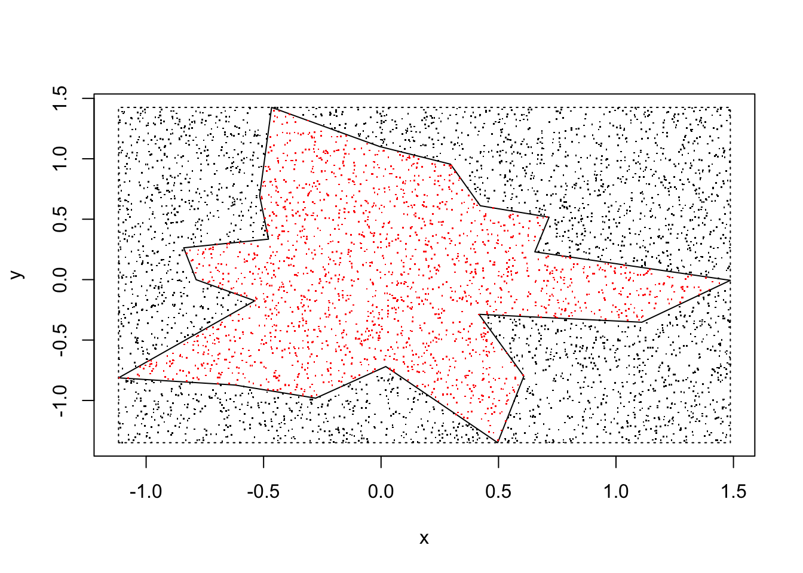
## [1] 2.913549Below algorithm is simple: with polygon function, it plots the polygon by the given ordered pairs of points. So we start to plot the points, and if the next point will break the convexity of the polygon, then just skip it. It’s recommended to run the following blocks few times to see what’s going on.
import random
from geometry_module import type_of_polygon
# How many random points before the shape stops being convex?
random.seed(2019)
k2 = 1000
xr1 = [random.uniform(-10, 10) for _ in range(k2)]
yr1 = [random.uniform(-10, 10) for _ in range(k2)]
first_bad = None
for i in range(3, k2 + 1):
if type_of_polygon(xr1[:i], yr1[:i]) != 'Convex':
first_bad = i
break
print('first non-convex prefix length:', first_bad)
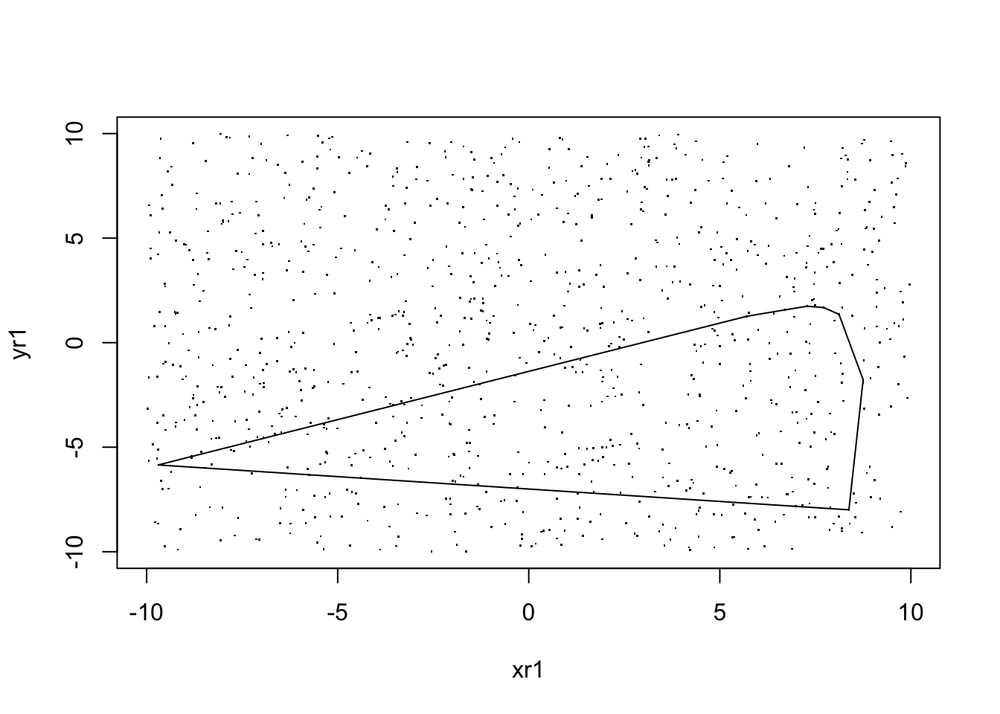
However, the limitation is very obvious. This method normally fails with a lot of “bad points” at the end.
Instead of plotting the convex polygon by the order of given points, consider to re-order the point by their distance to centre in desending order. After that, the first point will be the furthest from the centre, and the last will be the nearest to the centre.
import random
from geometry_module import type_of_polygon
# Same idea, but the points are ordered by distance from the centroid,
# which keeps the shape convex for longer.
random.seed(2019)
k2 = 1000
xr1 = [random.uniform(-10, 10) for _ in range(k2)]
yr1 = [random.uniform(-10, 10) for _ in range(k2)]
mx = sum(xr1) / k2
my = sum(yr1) / k2
order = sorted(range(k2), key=lambda i: -((xr1[i] - mx) ** 2 + (yr1[i] - my) ** 2))
xs = [xr1[i] for i in order]
ys = [yr1[i] for i in order]
first_bad = None
for i in range(3, k2 + 1):
if type_of_polygon(xs[:i], ys[:i]) != 'Convex':
first_bad = i
break
print('first non-convex prefix length:', first_bad)
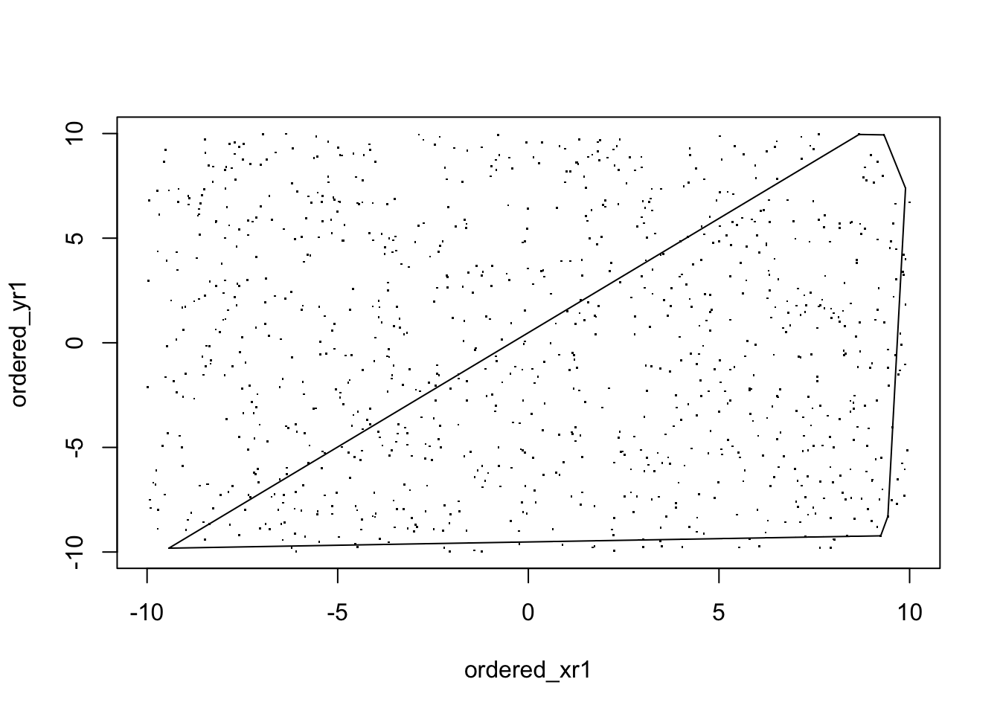
Again, the improved algorithm only improve the average area of the polygon, nothing to do with the number of vertices. Let’s find a way to generally increase the number of vertices.
If we want to find the largest convex polygon from the set of points, it is the same as finding the convex hull of the set of points. Convex hull of a set of points \(P_i\) in 2D can be understood as the largest polygon that cover all the points (A proper definition will be given in the later years).
In RStudio, there is a built-in function called chull, which is able to compute the subset of points which lie on the convex hull of the set of points specified.
import random
from geometry_module import convex_hull
# Random points and their convex hull
random.seed(2019)
k3 = 1000
xr2 = [random.uniform(-10, 10) for _ in range(k3)]
yr2 = [random.uniform(-10, 10) for _ in range(k3)]
hx, hy = convex_hull(xr2, yr2)
print('hull vertices:', len(hx))
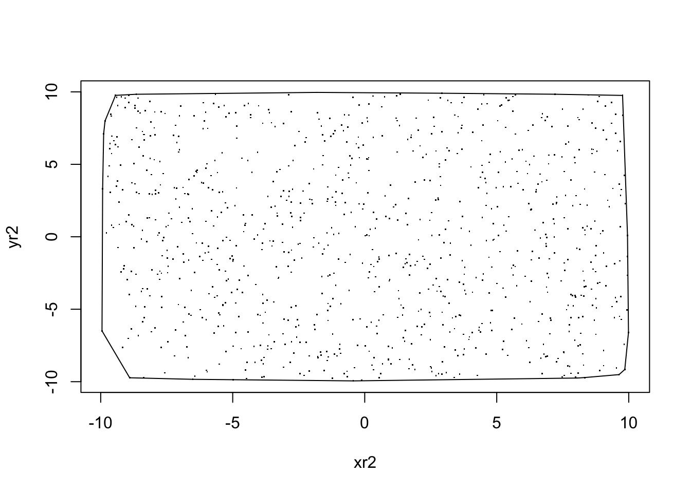
import random
from geometry_module import convex_hull
random.seed(2019)
_px = [random.uniform(-10, 10) for _ in range(800)]
_py = [random.uniform(-10, 10) for _ in range(800)]
hx, hy = convex_hull(_px, _py)
from geometry_module import area_mc_method
# Area of the convex hull computed just above
print(area_mc_method(hx, hy, 5000, 'ray')[0])
## [1] 385.94